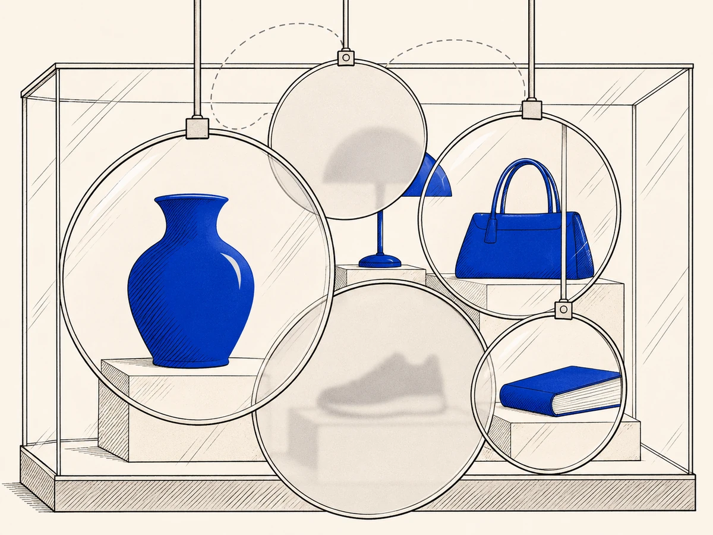

Quem decide o que você vê numa loja virtual ou numa rede social?OICs de infraestrutura e intermediação
Você procura um produto numa loja virtual, compara preços, olha as avaliações e escolhe o vendedor que parece mais confiável. Ou abre uma rede social e vê o que está em alta, o que os outros curtiram e o que parece importar naquele dia.
Parece que você está olhando o mercado ou a conversa como eles são. Mas tudo chegou até você já escolhido, ordenado e destacado pela plataforma, com critérios que você não controla e quase nunca consegue conferir.
De onde vem
Plataformas dessa natureza não apenas conectam. Elas selecionam, hierarquizam, destacam, ocultam, aproximam, retardam, priorizam e reorganizam a forma pela qual a realidade do ambiente se torna perceptível ao usuário.p. 761
O mercado, a oferta e até mesmo a relevância social do que circula em seu interior comparecem ao consumidor e ao usuário por meio de filtros privados de visibilidade, saliência e inteligibilidade.p. 761

De onde vem
Plataformas dessa natureza não apenas conectam. Elas selecionam, hierarquizam, destacam, ocultam, aproximam, retardam, priorizam e reorganizam a forma pela qual a realidade do ambiente se torna perceptível ao usuário.p. 761
O que você está usando, afinal?
Não importa o que foi vendido no fim nem o setor em que a plataforma atua. O que decide é como ela organiza a troca, o encontro e a comparação dentro do ambiente que ela administra.
Essas plataformas costumam se apresentar como uma praça neutra, que só aproxima quem vende de quem compra, ou quem publica de quem lê. Isso é verdade só na superfície.
O que você recebe é uma estrutura de visibilidade, reputação, curadoria, intermediação e entrega. Sem ela, o produto ou o conteúdo nem chegaria até você do jeito que chegou.
De onde vem
A incidência do regime do Objeto Imaterial de Consumo sobre plataformas de infraestrutura e intermediação não se define pelo objeto final negociado nem pela classificação econômica tradicional do setor em que a plataforma atua.p. 760
Em sua linguagem formal, elas frequentemente aparecem como espaços neutros de encontro entre vendedor e comprador, entre emissor e receptor, entre anunciante e audiência, entre produtores de conteúdo e público.p. 761
Essa descrição, embora parcialmente verdadeira em plano superficial, é insuficiente para captar a estrutura real do fornecimento.p. 761
Por que a vitrine faz parte do que você recebe?
Você não consome só o produto de um terceiro ou o post que aparece na sua tela. Antes disso, você consome a moldura que define o que parece mais relevante, mais confiável, mais seguro, mais popular ou mais digno de atenção.
Por isso ranking, reputação, destaque, recomendação e alcance não são detalhes da tela. Eles fazem parte da utilidade da plataforma e pesam no que você espera, no risco que você enxerga e na escolha que você faz.
De onde vem
Consomem, antes disso, molduras privadas que definem o que será visto como mais relevante, mais confiável, mais comparável, mais seguro, mais popular ou mais digno de atenção.p. 761
Rankings, reputação, destaque, recomendação, priorização e modulação de alcance não são elementos periféricos. Integram a utilidade funcional do ecossistema e influenciam diretamente a formação da expectativa, a avaliação do risco e a possibilidade de escolha racional.p. 761
Onde isso aparece no seu dia a dia?
Nas lojas virtuais. Os termos de uso dos grandes marketplaces mostram que a plataforma organiza muito mais que anúncios. Ela cuida das regras, da visibilidade, do pagamento, da reputação, da entrega e da solução de conflitos.
Nas redes sociais. Os termos das grandes redes mostram regras privadas sobre o que fica no ar, quem vê o quê, o que é moderado e como a conversa circula.
Compra e conversa são coisas diferentes, mas o mecanismo é o mesmo. Nos dois casos, a plataforma governa o lugar onde as coisas aparecem e prepara o espaço em que você vai decidir.
De onde vem
Em ambos os casos, a plataforma não se limita a hospedar anúncios. Ela administra critérios de apresentação, confiança, priorização e legibilidade do mercado acessível ao consumidor.p. 762
Também aqui a plataforma não apenas “deixa aparecer” conteúdos produzidos por terceiros. Ela administra a forma como esses conteúdos entram no campo de percepção do usuário e como sua relevância é socialmente estabilizada.p. 762
Em ambos os casos, a plataforma governa o ambiente de aparição.p. 762
Você escolhe mesmo sozinho?
Você não escolhe diante de um mercado transparente, com todas as ofertas lado a lado. Você escolhe dentro de um campo que a plataforma já interpretou para você.
Pesam na sua escolha a posição de destaque de um item, a cara de confiável de um vendedor, o jeito de mostrar as avaliações e a diferença entre o que é patrocinado e o que não é. Pesam também a ligação com pagamento e entrega e a ordem das categorias.
No fim, a plataforma produz o mercado que você consegue enxergar.
Isso tem nome
Vulnerabilidade semiótica. É a desvantagem de quem precisa confiar em sinais que outra pessoa controla. Aqui ela cresce porque a tela da plataforma passa a fabricar o que é real para você, e o que ela não mostra quase deixa de existir.
De onde vem
Trata-se de vulnerabilidade semiótica intensificada pela dependência estrutural da interface como produtora do real acessível.p. 763
A plataforma define o que se destaca, o que se esconde, o que parece mais confiável, o que adquire aparência de consenso, o que surge como comparável e o que se torna praticamente invisível.p. 763
O que a plataforma promete sem dizer?
A promessa não está só no que a empresa diz em voz alta, como neutralidade, eficiência ou conveniência. Está também na promessa implícita de que você vai conseguir entender o mercado ou a conversa que aparece na tela.
Quando os critérios são escondidos, quando há interesses internos que você não vê ou quando a ordem das coisas não pode ser conferida, o que você recebe é atingido no centro. Você perde a capacidade de ler o ambiente.
De onde vem
Em ambientes assim, a promessa do fornecedor não está apenas no discurso explícito de neutralidade, eficiência ou conveniência. Está também na promessa implícita de inteligibilidade do mercado ou da circulação social.p. 763
Quando essa inteligibilidade é governada por critérios opacos, interesses internos não transparentes ou padrões de hierarquização não auditáveis, a fruição passa a ser afetada em seu próprio núcleo de legibilidade.p. 763
Como provar o que a vitrine escondeu?
Não basta olhar o produto que chegou ou o post que sumiu. É preciso reconstruir a experiência inteira. Conforme o caso, entram aqui alguns pontos.
- Como as ofertas foram apresentadas.
- O que era resultado pago e o que não era.
- O papel das avaliações e da reputação.
- A ligação entre destaque e entrega.
- Os selos e sinais de confiança da tela.
- O contexto em que o conteúdo apareceu e as regras de moderação.
Na rede social, conta também como o feed, a recomendação e o alcance moldaram o que você via. Na loja virtual, contam o ranking, o destaque, a nota do vendedor e o patrocínio. Guarde capturas de tela com data enquanto ainda dá.
De onde vem
Não basta examinar o produto final adquirido ou o conteúdo individual removido, priorizado ou ocultado. É necessário reconstruir a arquitetura da experiência.p. 763
Isso inclui, conforme o caso, a forma de apresentação das ofertas, a distinção entre resultados orgânicos e pagos, o papel de avaliações e reputações, a integração entre visibilidade e logística, os sinais de confiabilidade fornecidos pela interface, o contexto de aparição do conteúdo, os critérios de moderação relevantes e os mecanismos pelos quais a plataforma induz percepção de mercado, de consenso ou de prioridade.p. 763
Quais armadilhas fazem você desistir cedo demais?
Achar que a tela é só enfeite. O jeito de mostrar as coisas faz parte do que a plataforma fornece.
Achar que a plataforma só responde pelo que escreveu. O que ela faz na prática com a visibilidade também conta, e não só o que está no contrato ou na propaganda.
Achar que o problema é só o último passo. A compra frustrada ou o post removido são o fim de uma história. O que levou até ali foi a vitrine montada pela plataforma.
Essas armadilhas deixam a plataforma com todo o poder sobre a sua escolha, escondido atrás de uma aparência de técnica neutra.
De onde vem
O primeiro é a tendência de tratar a interface como mero suporte visual, e não como parte constitutiva do fornecimento.p. 763
O segundo é a tendência de imaginar que a plataforma só responderia juridicamente pelo que dissesse expressamente em cláusula ou publicidade, como se a governança efetiva da visibilidade fosse juridicamente irrelevante.p. 763
O terceiro é a tendência de reduzir o litígio ao ato terminal, como a compra frustrada, a remoção de um conteúdo ou a suposta preferência por determinada oferta, sem investigar a estrutura privada de saliência que condicionou a experiência inteira do usuário.p. 763
O que a plataforma deve garantir?
Ninguém pode exigir que a plataforma abra todos os seus sistemas. Mas ela precisa deixar conferível o mínimo sobre como apresenta, ordena, modera e avalia o que aparece.
O que se pede é clareza suficiente para você entender como o ambiente organiza a sua experiência. E para entender como as escolhas da plataforma pesam no que você espera, na comparação entre ofertas e na chance de contestar.
De onde vem
A auditabilidade aberta exige verificabilidade institucional mínima sobre os critérios relevantes de apresentação, priorização, moderação, reputação e circulação, sem que isso implique abertura irrestrita de sistemas internos.p. 764
O que se demanda é inteligibilidade suficiente para compreender como o ambiente organiza a experiência do usuário e como determinadas escolhas da plataforma interferem na formação da expectativa, na comparabilidade entre alternativas e na possibilidade de contestação.p. 764
E se a plataforma muda as regras do jogo?
Às vezes a plataforma muda a forma de intermediar, a lógica de quem aparece, os critérios de reputação ou as regras de circulação. Se a mudança piora muito o que você tinha legitimamente e nada compensa a perda, isso pode ser contestado.
Isso vale para quem compra e vende na loja virtual e para quem publica e busca alcance na rede social.
De onde vem
A equivalência funcional, por sua vez, incide quando alterações do regime de intermediação, da lógica de visibilidade, dos critérios reputacionais ou das regras de circulação degradam de modo relevante a utilidade legitimamente incorporada ao vínculo, sem recomposição compatível.p. 764
Isso pode ocorrer tanto no comércio eletrônico quanto na circulação social de conteúdo, sempre que a plataforma altere substancialmente o papel funcional da infraestrutura que oferecia como ambiente de troca, alcance ou reconhecimento.p. 764
O que pedir de quem organiza a vitrine?
O caminho é cobrar deveres sobre o próprio jeito de organizar, e não só discutir o produto final ou o que um terceiro fez. Cabe perguntar se ficou claro o que a plataforma fazia ali e se dava para distinguir o patrocinado do resto.
Cabe perguntar também se a reputação mostrada podia ser conferida e se critérios escondidos atrapalharam a comparação. E se a própria tela enganou, confundiu ou criou um desequilíbrio que a lei do consumidor não aceita.
Nos casos mais graves, quando a mesma empresa arbitra a vitrine e ganha com o que acontece nela, a questão pode chegar a práticas abusivas mais amplas e à concorrência entre quem vende.
De onde vem
A consequência dogmática possível, nesse ambiente, tende a gravitar em torno de deveres procedimentais de controlabilidade da governança da interface.p. 764
Torna-se necessário examinar, em chave de OIC, se houve informação adequada sobre a natureza da intermediação, se a distinção entre prioridade orgânica e prioridade patrocinada foi materialmente inteligível, se a reputação exibida era funcionalmente verificável, se a opacidade dos critérios comprometeu comparabilidade relevante e se a própria interface produziu enganosidade, obscurecimento ou assimetria estrutural incompatível com o regime consumerista.p. 764
Em hipóteses mais graves, especialmente quando a plataforma atuar simultaneamente como árbitra do ambiente e agente econômico interessado em seus resultados, a opacidade da hierarquização pode também dialogar com práticas abusivas mais amplas e com repercussões concorrenciais próprias.p. 764
Como saber se é o seu caso?
Responda para você mesmo.
- A sua escolha dependeu do que a plataforma destacou, escondeu ou ordenou?
- Não ficou claro o que era anúncio pago ou como a reputação era calculada?
- A plataforma mudou as regras de visibilidade ou de reputação sem explicar?
- Você não consegue reconstruir o que aconteceu sem os registros da empresa?
Quanto mais respostas sim, mais o seu caso se parece com o que a lei protege aqui. Isso não garante o resultado, mas mostra por onde começar.
De onde vem
O subtipo demonstra, assim, que a plataforma de infraestrutura e intermediação não é mero corredor neutro por onde circulam vontades previamente formadas. Ela é agente de construção do campo em que essas vontades se tornam possíveis, perceptíveis e operacionalizáveis.p. 764
Por que a intermediação não é neutra?
A utilidade não se esgota no bem, no conteúdo ou no anunciante da ponta. É uma infraestrutura de visibilidade, reputação, curadoria, intermediação e logística. A plataforma seleciona, hierarquiza, destaca, oculta e reorganiza a forma como o ambiente se torna perceptível. Rankings, reputação, destaque, recomendação e modulação de alcance integram a utilidade funcional. Nos marketplaces, o consumidor escolhe num campo já pré-interpretado. Nas redes sociais, o mesmo mecanismo reaparece, porque a plataforma administra a forma como os conteúdos entram no campo de percepção.
A plataforma, portanto, produz o próprio mercado perceptível.p. 762
De onde vem
O que se oferece, em termos juridicamente relevantes, é uma infraestrutura de visibilidade, reputação, curadoria, intermediação e logísticap. 761
Elas selecionam, hierarquizam, destacam, ocultam, aproximam, retardam, priorizam e reorganizam a forma pela qual a realidade do ambiente se torna perceptível ao usuário.p. 761
Rankings, reputação, destaque, recomendação, priorização e modulação de alcance não são elementos periféricos.p. 761
Ele escolhe dentro de um campo já pré-interpretado pela plataforma.p. 762
Ela administra a forma como esses conteúdos entram no campo de percepção do usuário e como sua relevância é socialmente estabilizada.p. 762
Qual vulnerabilidade a interface produz?
A assimetria não é só de quantidade de informação. É de constituição do campo relevante da decisão. A plataforma define o que se destaca, o que se esconde, o que parece mais confiável e o que se torna quase invisível. A promessa está também na inteligibilidade implícita do mercado ou da circulação social, e é afetada quando governada por critérios opacos ou não auditáveis.
De onde vem
Enfrenta assimetria de constituição do campo relevante da decisão.p. 763
A plataforma define o que se destaca, o que se esconde, o que parece mais confiável, o que adquire aparência de consenso, o que surge como comparável e o que se torna praticamente invisível.p. 763
Está também na promessa implícita de inteligibilidade do mercado ou da circulação social.p. 763
Como reconstruir a experiência?
Não basta examinar o produto final ou o conteúdo removido. É preciso reconstruir a apresentação das ofertas, a distinção entre resultados orgânicos e pagos, avaliações e reputações, a integração entre visibilidade e logística, os sinais de confiabilidade e os critérios de moderação. Em redes sociais, o feed, a recomendação e o alcance. Em marketplaces, ranking, destaque, classificação de vendedor e patrocínio. Os pontos de cegueira são tratar a interface como suporte visual, limitar a responsabilidade ao que está em cláusula ou publicidade e reduzir o litígio ao ato terminal.
De onde vem
Não basta examinar o produto final adquirido ou o conteúdo individual removido, priorizado ou ocultado.p. 763
Isso inclui, conforme o caso, a forma de apresentação das ofertas, a distinção entre resultados orgânicos e pagos, o papel de avaliações e reputações, a integração entre visibilidade e logísticap. 763
O primeiro é a tendência de tratar a interface como mero suporte visual, e não como parte constitutiva do fornecimento.p. 763
O terceiro é a tendência de reduzir o litígio ao ato terminalp. 763
Que consequência é possível?
Deveres procedimentais de controlabilidade da governança da interface. O exame verifica se houve informação adequada sobre a intermediação, se a distinção entre prioridade orgânica e patrocinada era inteligível, se a reputação exibida era verificável e se a opacidade comprometeu comparabilidade relevante. Quando a plataforma é árbitra do ambiente e interessada nos resultados, a questão pode dialogar com práticas abusivas mais amplas e com repercussões concorrenciais. Auditabilidade aberta e equivalência funcional operam como filtros transversais.
De onde vem
A consequência dogmática possível, nesse ambiente, tende a gravitar em torno de deveres procedimentais de controlabilidade da governança da interface.p. 764
se a distinção entre prioridade orgânica e prioridade patrocinada foi materialmente inteligível, se a reputação exibida era funcionalmente verificávelp. 764
Em hipóteses mais graves, especialmente quando a plataforma atuar simultaneamente como árbitra do ambiente e agente econômico interessado em seus resultados, a opacidade da hierarquização pode também dialogar com práticas abusivas mais amplas e com repercussões concorrenciais próprias.p. 764
Nessa família, auditabilidade aberta e equivalência funcional operam como filtros transversais.p. 764
Onde estudar a fundo?
No curso para juristas, que reconstrói o regime aplicado aqui.